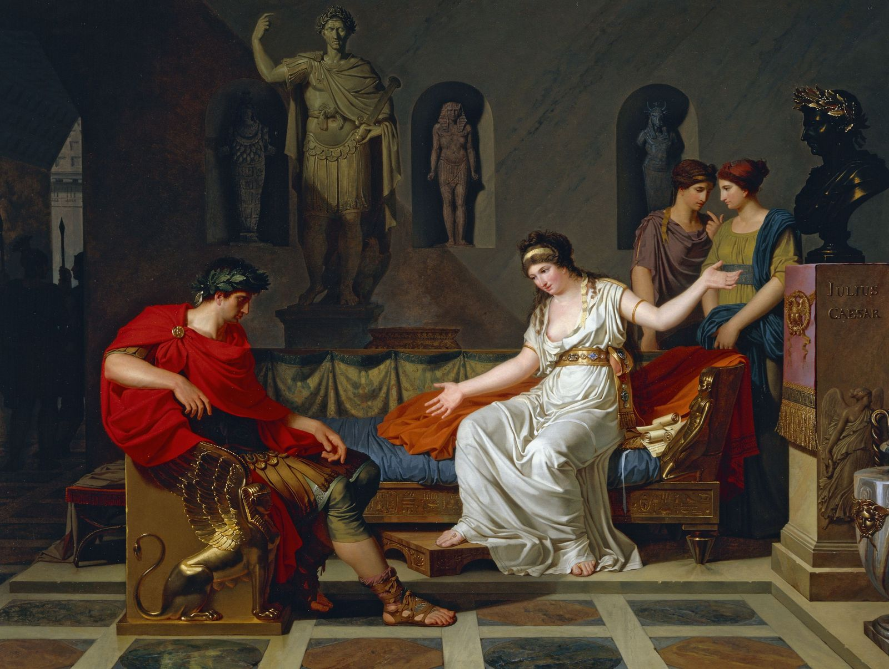
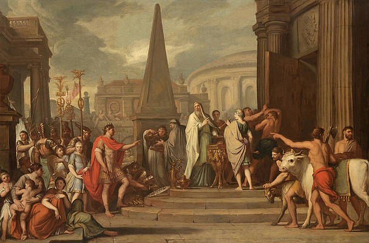

Unten lassen sich alle behandelten Lektionstexte wiederfinden.
Da eilte der Priester Laocoon, ein Mann von großer Klugheit, aus der Stadt zum Strand und rief aus der Ferne:
"Oh was für eine Unglück bringende Sache! Wenn ihr Glaubt, dass die Griechen uns ein Geschenk gemacht
haben, irrt ihr euch. Habt ihr etwa die Hoffnung, dass sie keinen Betrug und keine List vorhaben. Es ist Wahnsinn
den Griechen zu vertrauen. Entweder sind Männer und Waffen in dem Pferd verborgen oder eine andere List
steht uns bevor. Fürchtet die Griechen, auch wenn sie uns ein Geschenk gemacht haben. Werft das Pferd ins
Meer!" Auch die Menschen heißen die Meinung des Priesters gut, und Laocoon hatte die Hoffnung, die Bürger
von sich zu überzeugen, als plötzlich zwei große Schlangen durch das Meer an den Strand eilten. Sofort griffen
sie Laocoon und seine zwei Söhne die neben ihm standen an. Zuerst umwickelten sie dien Körper der Söhne.
Danach umwickelten sie den Körper des Vaters, der seinen Söhnen helfen wollte, mit kräftigen Windungen.
Laocoon, der ein Mann von großer Körperkraft war, bemühte sich die Knoten aufzureißen, aber die Kräfte
verließen ihn. Danach töteten die Schlangen den Priester und seine Söhne und verschwanden dann im Tempel
der Minerva. Darüber waren die Menschen in großer Furcht und standen unsicher an Strand. Schließlich sagte
Thymoetes, ein Mann großen Ansehens: " Hat euch das nicht die Augen geöffnet? Das Pferd ist ein Geschenk an
Minerva, die Griechen haben es für eine glückliche Heimkehr gebaut. Glaubt ihr mir nicht Bürger? Der Tod
Laocoons ist ein Beweis der Götter."
Bald kehrte Eurylochus alleine zurück und sagte: „Ich fürchte mich, diese Sachen zu erzählen, welche passiert
sind, aber ich werde aufrecht und wahrhaft erzählen: Wir waren zu einem großen Palast gekommen. Plötzlich
erschien eine hübsche Frau, sie lud uns mit sanften Worten in den Palast ein. Ich blieb am Eingang stehen, weil
ich Betrug und auch Hinterhalt befürchtete. Die Frau reichte den Gefährten einen Trank, den sie gerne
entgegennahmen. Sofort verwandelten sie sich in Schweine.“ Sobald Odysseus diese Dinge hörte, nahm er das
Schwert und eilte zum Palast. Ihm begegnete Merkur: Du wirst diesen Ort nicht unbeschadet verlassen, du wirst
die Gefährten nicht unverletzt von dieser Insel führen ohne die Hilfe der Götter. Also trage dieses (Heil-)Mittel mit
dir! Mit der Kraft dieses Mittels wirst du den Zauberkünsten von Circe entkommen.“ Sobald Odysseus zum Palst
kam, rief er Circe nach draußen heraus. Diese erschien sofort, führte ihn nach drinnen, reichte ihm einen Trank.
Odysseus zögerte nicht, ihn zu trinken. Darauf sagte Circe: ‚Gehe fort in den Schweinestall‘ und berührte ihn mit
einem Stab. Sie blickte Odysseus verblüfft an. Dieser nahm nicht die Gestalt eines Schweines an, sondern zückte
grimmig das Schwert und gab vor, dass er sie tötete. Circe warf sich ihm zu Füßen und flehte auf diese Weise/
folgendermaßen: „Halte den Zorn zurück, lass mich leben! Merkur hatte vorausgesagt, dass ich alle Sterblichen
verwandeln kann außer Odysseus. Wenn du Odysseus bist, sei mein Freund!“ Auf diese Worte antwortete
Odysseus – obwohl er vor Liebe bereits brannte – barsch: „Wie kann ich dir denn Vertrauen schenken? Bevor ich
dir ein Freund bin, schwöre beim Styx: ‚Ich werde damit aufhören, dir zu schaden und werde deinen Gefährten
die menschlichen Gestalten zurückgeben.'
"Merkur wurde von Jupiter befohlen, Äneas an den Willen der Götter zu erinnern; daher forderte er bald den
Anführer der Trojaner auf: „Denke an das neue Vaterland, welches dir in Italien bestimmt worden ist, denke an
das neue Geschlecht, dessen Schicksal es ist, Italien und den ganzen Erdkreis zu regieren. Versammle die
Gefährten am Strand, bereite das Schiff, segle!“ Äneas war in der Seele/ im Herzen verwirrt, weil er Dido nicht
zurücklassen wollte; er erahnte ihren Schmerz und ihre Wut. Dann befiel ihn das Verlangen nach Flucht. Sofort
sammelte er die Gefährten am Strand und befahl ihnen, das Schiff zu bereiten; er beschloss, Dido später über die
Abreise zu unterrichten. Die Königin aber erahnte die Täuschungen und ging mit bitteren Worten zu Äneas hin:
„Willst du vor mir fliehen, Grausamer? Hast du etwa gehofft, dass du so viel Unrecht verheimlichen kannst und
dass du stillschweigend aus meinem Land weggehen kannst? Hält dich etwa weder unsere Liebe fest noch die
Treue, die du gegeben hast, noch Dido, die dem Tod geweiht ist? Siehe diese Tränen und habe Mitleid, ich bitte
dich, ändere den Plan!“ Äneas wurde zwar von Didos Schmerz heftig berührt, dennoch schwieg er und mied ihre
Augen. Endlich sagte er: Halte die Tränen zurück, Königin, halte den Zorn zurück! Du irrst, wenn du glaubst,
dass du von mir getäuscht wirst. Ich habe dir niemals die Heirat versprochen, ich wollte nichts verheimlichen.
Höre auf, sowohl mich als auch dich mit deinen Klagen zu reizen. Ich verlasse dich nicht aus freien Stücken; ich
bin von den Göttern gezwungen wurden, wegzugehen. Was mir die Götter befohlen haben, das muss ich
machen."
"Romulus und Remus wünschten in dieser Gegend, wo sie ausgesetzt worden waren, eine Stadt zu gründen. An
diesem Ort, an welchem sie von der Wölfin entdeckt und genährt worden waren, entschlossen sie sich, eine
Stadtmauer zu errichten. Sie waren bereits mit Rieseneifer am Bau beschäftigt, als Remus fragte: „Welcher von
beiden wird der Stadt den Namen geben? Welcher von beiden wird diese Stadt regieren?“ Bald stritten die Brüder
heftig unter sich, weil sie sich über diese Dinge nicht einigen konnten; denn beide waren vom Wunsch zu regieren
befallen. Endlich sagte einer von den Brüdern: „Da ja zwischen uns ja keine Einigung zustande gekommen ist,
brauchen wir die Hilfe der Götter.“ Und so nahmen beide eine Wahrsagung durch den Vogelflug vor – Romulus
auf dem Palatin, Remus auf dem Aventin. Dem Remus erschienen die ersten sechs Geier. Dieser
rief sofort: „Ich bin König!“ Aber wenig später zeigte sich dem Romulus eine doppelt so große Anzahl von Geiern.
Dieser zögerte nicht, das Königreich für sich zu beanspruchen und sagte: „Ich erkenne deine Vogelschau nicht
an, Bruder. Die Anzahl der Vögel nämlich ist ausschlaggebend, nicht die Zeit. Aus diesem Grunde werde ich der
Stadt den Namen geben, ich werde die Stadt regieren, sobald die Stadtmauern errichtet sein werden.“ Darauf
wurde Remus von Wut ergriffen und verspottete den Bruder. Er sagte: „Auf welche Weise wirst du die Stadt vor
Gefahren verteidigen, wenn sie von so kleinen Mauern umgegeben sein wird?“, und übersprang die neuen
Mauern. Erzürnt wegen dieser Dreistigkeit hat ihn der Bruder getötet. So erlangte allein Romulus die
Königsherrschaft, demgemäß wurde die neue Stadt nach dem Namen von Romulus „Rom“ genannt."
"Der König Tarquinius herrschte stolz und grausam, deshalb war es der Hochmütige genannt worden.
Das Volk liebte ihn nicht, weil es zu schweren Arbeiten gezwungen worden war.
Sogar viele Patrizier waren ihm Feind, da sie von öffentlichen Ämtern ausgeschlossen worden waren. Weil
Tarquinius durch die Furcht vor Anschlägen veranlasst worden war, beseitigte er den führenden/ersten Mann des
Staates. Er fürchtete sogar seine Neffen: Den einen tötete er, das Leben des anderen verschonte er, da er glaubte, dass von diesem/ ihm keine Gefahr ausgehe. Dieser hatte vorgetäuscht, dass er dumm sei und hatte die Ungerechtigkeit des Königs im gerechten Herzen ertragen. Sogar den Beinamen Brutus hatte er nicht zurückgewiesen.
Deshalb lebte er, weil er von Tarquinius nicht durchschaut worden war, ein sicheres Leben.
Aber an eine bestimmten Tag wandte der König sich, da er von dem schrecklichen Zeichen der Götter beunruhigt
worden war, so an Brutus: „Ich beschloss, meine zwei Söhne nach Delphi zu schicken; sie werden das Orakel über mein Schicksal befragen. Du, Brutus, wirst ihr Begleiter sein.“ Brutus sagte mit großer Freude erfüllt nichts. Bald eilten die Söhne des Königs mit Brutus nach Delphi. Nachdem sie dorthin gekommen waren , führten sie die Aufträge des Vaters aus. Daraufhin wünschten die Brüder das Orakel über ihr Schicksal zu befragen. In Anwesenheit von Brutus sagte der eine von den beiden/ ihnen: „Wer von uns“, sagte er, „wird irgendwann einmal/ einstmals die Oberherrschaft in Rom haben?“ Kaum hatte er geendet, als dies geantwortet wurde : „Derjenige, oh ihr jungen Männer, der als Erster von euch der Mutter einen Kuss gibt, wird die Oberherrschaft in Rom haben.“ Sofort beschlossen die Brüder – von großer Hoffnung angetrieben – nach Rom zu eilen. Plötzlich fiel Brutus zur Erde und berührte diese mit dem Mund. Deswegen verspotteten die Söhne des Königs Brutus, der aber lächelte milde. Bald darauf vertrieb er die Tarquinier und die Oberherrschaft ging auf ihn über."
"Damals waren die Burg Roms und das Kapitol in ungeheuer großer Gefahr gewesen. Denn die Gallier bemühten
sich, da sie die Stadt eingenommen hatten, auch das Kapitol zu erobern. Die römischen Bürger
glaubten jedoch, dass sie durch die natürliche Lage der Burg geschützt sind. „Weshalb werden so viele Nachtwachen aufgestellt? Warum wird die Burg so sorgfältig bewacht? Der Zugang zur Burg ist eng, die Feinde werden nur von wenigen ferngehalten werden. Warum werden wir gezwungen die Nachtwachen zu halten? Warum werden wir unseres Schlafs beraubt?" Aber eines Nachts rückten die Gallier in großer Stille zum Berg vor. Endlich hatten sie einen für den Aufstieg geeigneten Fels wahrgenommen. Einer von diesen erkundete den Weg, die Übrigen kletterten nach ihm hinauf. Sie schoben sich gegenseitig hoch und die einenzogen die anderen, wie der Ort verlangte. So kamen sie am Gipfel an. Schon glaubten sie, dass sie die Nachtwachen, ja sogar die Hunde getäuscht hätten, als plötzlich die heiligen Gänse der Iuno schrien. Diese waren in größter Hungersnot nicht geschlachtet worden. Der von dem Geschrei der Gänse aufgeweckte M. Manlius, ein tapferer und leidenschaftlicher Mann, ergreift die Waffen und stürzte mit diesen Worten auf den
Feind zu: „Ergreift die Waffen, ihr jungen Männer, eilt herbei! Wir werden von den Galliern angegriffen! Verteidigt die Frauen und Kinder! Verteidigt die Heimat! Warum zögert ihr? Werdet ihr etwa von den Galliern erschreckt? Die Burg wird erobert werden, ihr werdet getötet werden, ihr werdet in die Skalverei abgeführt werden, wenn ihr euch nicht beeilt! Ich werde von der Gefahr des Todes nicht erschreckt!" Da hat er den ersten Gallier, der bereits auf dem Gipfel stehen geblieben war, von der Burg gestoßen. Durch dessen Fall ist das ganze Heer der Gallier in die Tiefe gerissen worden."
"Im düsteren Licht werden die Säulen des Tempels des Baal kaum erkannt. Auf dem Altar gab die Flamme
spärliches Licht von sich. Manchmal funkelte ein Götterbild golden. Plötzlich ist Hamilkar Barcas, ein Mann von
gewaltiger Körpergröße, mit seinem Sohn, einem Knaben von neun Jahren erschienen. Jener befahl diesem
stehen zu bleiben und allein zum Altar zu gehen, während er fragte: "Fürchtest du dich Hannibal?" "Weswegen,
Vater? Wir sind im Tempel des Baals!" "Das weiß ich ganz genau." "Aus welchem Grund habe ich dich hier
hergeführt, mein Sohn?" "Ich weiß es nicht, aber sicherlich wirst du mir das erzählen." Jedoch sagte Hamilkar
seinem Sohn, der das gewissenhaft sagte, folgendes: "Welches Volk raubt aus unersättlicher Habgier alles? Der
Senat wessen Volkes hat uns Sardinien und Sizilien entrissen? Welches Volk würde den anderen befehlen?" "Es
sind die Römer, Vater." "Du hast die Wahrheit gesagt: Es sind die Römer, die die Herrschaft über alle Länder zu
erreichen suchen. Es ist notwendig, dass wir sie von Afrika fernhalten. Ich werde unsere Heere, die nach Spanien
hinübergeführt wudren, gegen sie führen. Ich werde mit ihnen in ihren eigenen Grenzen kämpfen. Denn hat er
begonnen den Baal zu opfern. Plötzlich hat er seinen Sohn ,mit brennenden Augen ansehend, gefragt: "Willst du
mit mir im Lager sein?" Sofort rief Hannibal aus, während er die Würde der Stadt vernachlässigte: "Führe mich,
Vater, mit dir nach Spanien, mache mich zu deinem Soldaten!" Darauf sagte Hamilcar: "Ich werde es machen,
sobald du mir die Treue geschworen hast", und er führte Hannibal zum Altar und sagte: "Berühre den heiligen
Altar." Schließlich befahl er dem Sohn, so zu schwören, während er den Altar berührte: "Niemals werde ich mit
den Römern Freundschaft schließen." Hannibal antwortete, sobald er die Worte des Vaters mit brennendem Hass"
"In welcher Stadt leben wir eigentlich, ihr Senatoren? Was für einen Staat haben wir? In Etrurien ist gegen das
römische Volk ein Lager aufgestellt worden, dessen Befehlshaber – welche Frechheit! – wenig zuvor sogar in den
Senat gekommen ist. Ihr fragt, wer er ist, welches Verbrechen er im Sinn hat? Der da ist der Anführer der
Verschwörung, täglich denkt er über unseren Untergang, über das Verderben dieser Stadt nach.Merkst du denn nicht, Catelina, dass deine Pläne ofenstehen? Glaubst du etwa, dass ich nicht weiß, was du in der letzten Nacht
getan hast, wo du gewesen bist, welche Männer du zusammengerufen hast,welche Pläne gefasst worden
sind? Du fragst, auf welche Weise ich all dies erfahren habe.Ich höre und ich sehe und ich spüre, was von dir und
den Deinen überlegt wird, was getan wird, weil nichts meiner Sorgfalt entgeht. Ich weiß ganz genau, warum ihr im
Haus des M. Laeca tef in der Nacht zusammengekommen seid:du hast deinen Leuten befohlen, die Stadt durch
Brand zu zerstören, du hast deinen Leuten befohlen, mich in meinem Bett kurz vor Tagesanbruch zu ermorden.
Wagst du etwa, es zu leugnen? Ich werde mich dafür einsetzen, dich zum Staasfeind zu erklären, und ich werde
nicht ruhen. Schon habe ich gegen dich, Catlina, einen schwerwiegenden Senatsbeschluss. Aber obwohl
dadurch erlaubt wird, dich hinzurichten,werde ich dennoch nicht befehlen, dich zu töten. Nur dies fordere ich von
dir: Geh weg, verschwinde, verlasse die Stadt! In Rom wird dich nichts mehr erfreuen, weil du von meinen vielen
Wachtruppen belagert wirst. Augen und Ohren vieler Leute werden dich immer und überall bewachen.Dich
werden sie von allen Seiten umzingeln.Wie lange eigentlich noch wirst du durch deine Anwesenheit unseren Zorn
entzünden?"
Caesar erwartete die Ankunft Kleopatras, über die er so Wunderbares gehört hatte. Zwar hatte er den Wachen befohlen, ihre Ankunft sofort zu melden, doch er zweifelte, ob die Königin überhaupt in den Palast gelangen konnte.Denn er wusste, mit was für einer Mühe die Freunde des Ptolemaeus alle Zugänge zum Palast geschlossen hatten. Es war ungewiss, was jene unternommen hatten, damit Kleopatra abgehalten wurde, den Palast heimlich zu betreten. Während er derartig überlegte, trat einer von den Freunden ein, wobei er sagte: „Hör Caesar! Nicht weit vom Palast ist ein Mann ergriffen worden, während er aus einem kleinen Schiff stieg. Er trug eine große, in eine Decke eingewickelte Last. Er bestätigte, dass er ein Geschenk der Kleopatra bringt. Was …?“ Sofort sagte Caesar: „Führ ihn zu mir!“ Kurz danach wurde ein Mann herbeigeführt, der eine nicht zu erkennende, längliche Sache auf seiner Schulter trug. Ohne zu zögern legte er die Last vor Caesar nieder.Dann: „Nimm das, von Kleopatra geschickte, Geschenk an, Caesar!“ Sofort befahl Caesar, dass dieses ausgepackt wird. Wie er ins Staunen geriet, als er plötzlich eine Frau sah, die aus der Decke aufstand. Diese sagte ihm, während sie ihn mit funkelnden Augen anblickte, mit hoher Stimme:„Sei gegrüßt Caesar! Ich bin Kleopatra, die Königin Ägyptens!“ Weil sie eine Frau von ausgezeichneter Schönheit war und mit Perlen und Gold glänzte, befiel Caesar eine so große Bewunderung, dass er lange schwieg.Es war für alle, die um ihn herum standen offensichtlich, wie sehr der Feldherr in Verwirrung geraten war. Schließlich brach Kleopatra die Stille mit einer schmeichelnden Stimme:„Ich bin gekommen, wie du befohlen hast; ich werde machen, was du von mir verlangst. Aber sag mir zuerst: Was wirst du mit Ägypten machen?“ Darauf sagte Caesar, weil er die Frau begehrte: „Ich werde machen, was du willst, Kleopatra.“ Diese sagte aber: „Mach, dass ich alleine Ägypten beherrsche!“
Augustus ruhte nach dem Essen auf einer Liege, als plötzlich ein Wächter des Schlafzimmers eintrat:„Verzeih mir, wenn ich deine Ruhe gestört habe. Der Tribun Patavinus fordert Zugang zu dir und sagt, dass die Sache keinen Aufschub dulde. Augustus schwieg lange. Schließlich:„Was meldet er? Welche Sache ist von so großer Bedeutung, dass sie nicht auf den morgigen Tag verschoben werden kann?“ Sofort sagte der Wächter: „Weiß ich doch nicht! Jener versichert jedenfalls, dass er eine schlimme Botschaft aus Germanien bringe. “Da erhob sich Augustus, wobei er sagte: „Führ ihn heran!“ Kaum war der Tribun eingetreten, als Augustus fragte: „Aus welchem Teil Germaniens bist du gekommen? Welche Schreckensnachrichten bringst du?“ Sofort antwortete der Tribun: „Ich bin aus einer Stadt der Ubier gekommen. Aber mein Sinn schreckt davor zurück zu berichten, was in Germanien...“ „Was ist mit Germanien, Rübennase? Habe ich denn dieses Land nicht unterworfen? Haben denn die Stämme der Germanen nicht durch Boten Frieden und Freundschaft des römischen Volkes erbeten?“ „Jenen Barbaren darf kein Vertrauen entgegengebracht werden. Q. Varus jedenfalls hat ihnen zu viel Vertrauen geschenkt.“ „Was ist geschehen? Berichte!“ „Die Germanen haben Varus gebeten, einige Streitfälle zu entscheiden. Da sie die römische Gerechtigkeit mit schmeichelnden Lobsprüchen hervorhoben, ist Varus ohne irgendeinen Verdacht mit dem Heer mitten nach Germanien hineingezogen. Eine Nachricht ist zu uns durchgebracht worden, dass er in eine Falle der Germanen getappt sei und zusammen mit drei Legionen ermordet worden sei. “Da schrie Augustus, die Hände zum Himmel streckend: „Oh, Jupiter“, sagte er,„mach, dass ich diese Niederlage ertrage!“ Man sagt, fass er so erschüttert worden sei, dass er viele Monate ungeschoren durch sein Haus irrte und manchmal so gar seinen Kösel an die Türpfosten schlug, wobei erschrie:„Varus, Varus, gib mir meine Legionen wieder!“
